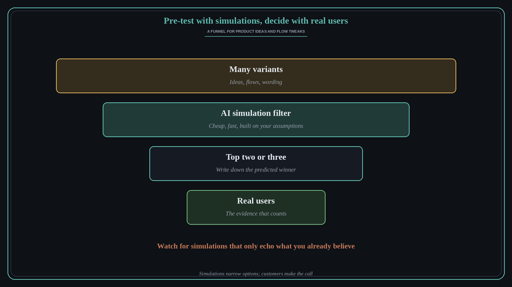

Use AI simulations to pre-test ideas, then confirm with real users
Source: Lenny Rachitsky (@lennysan)
original post
What it claims
Lenny Rachitsky flagged a trend he is following: product teams using AI “simulations” to quickly test product ideas and small flow changes. He pointed to a handful of startups building synthetic-user and simulation tools, and asked people who have tried them how it went. The post drew strong interest from practitioners (over a thousand bookmarks), which suggests many teams are curious but still working out how far to trust it.
Why it matters for a PO
Simulated users can make it cheap to try many variants of a flow or message before taking anyone's time, which is useful when real user access is slow, as it often is in B2B. But a simulation reflects the assumptions and data it was built on, so it can confidently tell you what you already believe. A PO can use it to narrow options and sharpen questions, while still treating real customer evidence as the test that counts.
3 takeaways
- Use simulations to filter many variants down to a few, not to make the final call.
- Write down what the simulation predicts, then check it against real users.
- Watch for simulations that only echo your own assumptions back to you.
Practice this week
Pick one small flow or wording change you are unsure about. Write down which version you expect to win and why. If you try a simulation tool, record its prediction too, then put the top version in front of two or three real users and compare what they actually did with both predictions.